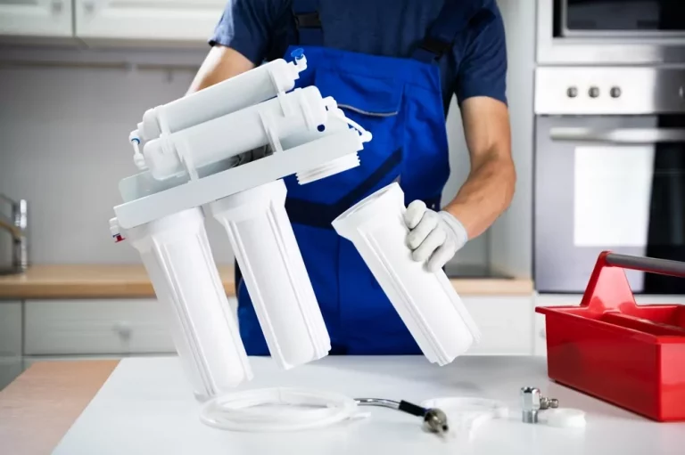

Проблема качества воды для нужд частного дома, даже если он присоединен к централизованной сети, решается подключением современных систем очистки. В зависимости от исходного состояния носителя, они способны удалять из него грубые взвеси и химические вещества, препятствовать размножению вредных бактерий и микробов, улучшать вкусовые свойства. Ассортимент современных фильтрующих конструкций очень большой, и выбор без опыта часто затруднителен. Стандартные вопросы владельцев домов: на что ориентироваться при покупке, кто должен устанавливать и обслуживать систему? Наша статья ответит на все.
Содержание:
- Общие принципы работы систем водоочистки
- Как выбрать систему водоочистки для частного дома
- ТОП-5 систем водоочистки для частного дома — преимущества и недостатки каждой модели
- Рекомендации по установке и обслуживанию систем водоочистки
- Заключение
Общие принципы работы систем водоочистки
Основная задача любой фильтрующей установки, это получение на выходе воды, отвечающей всем необходимым стандартам — без осадка и примесей. Кроме ее качества, учитывается и объем, удовлетворяющий нуждам. Устройство монтируется на участок от скважины или магистрального водопровода, обеспечивая бесперебойную подачу носителя в дом. Автоматические клапаны и настройки регулируют скорость и напор потока, делая эксплуатацию системы комфортной.
Основные типы систем водоочистки
Любая фильтрационная установка — это сложная конструкция, в которую включены устройства, участвующие в многоступенчатой очистке. Типы систем:
- грубая очистка. Освобождает воду от видимых частиц ржавчины, глины, песка и т. д. при помощи сетчатых и насыпных фильтров;
- химическая. Сорбенты и реагенты способствуют выводу из носителя тяжелых металлов, железа, марганца и других соединений;
- бактериальная. Вода озонируется и обрабатывается специальными УФ-фильтрами;
- тонкая. Завершающий этап фильтрации выводит остаточные компоненты от предыдущих ступеней.
В зависимости от задач, устройство может иметь один или несколько этапов обработки, а также быть комплексным агрегатом, удовлетворяющим всем понятиям чистой и безопасной воды.
Принципы работы систем обратного осмоса, умягчения и фильтрации
Кроме чистоты воды, важны ее химические свойства: жесткость, солесодержание и минерализация. Превышение параметров влияет не только на здоровье пользующихся водой жильцов дома, но и на долговечность эксплуатации бытовых агрегатов, связанных с ней: бойлеры, котлы, техника. Для поддержания нормы используют следующее оснащение:
- аэрационные колонны и фильтры с ионообменной смолой. Они умягчают воду;
- системы обратного осмоса. Устройства выводят из жидкости лишние соли и минералы;
- фильтры с активированным углем. Эти системы улучшают цвет, прозрачность и вкусовые свойства питьевой воды.
Необходимость в комплексном оборудовании, решающем сразу несколько проблем с исходным качеством носителя, оценивается после тщательного анализа воды. Как правило, она часто не соответствует нормам по многим параметрам.
Как выбрать систему водоочистки для частного дома
Цена любого варианта, предложенного современным рынком, но должна быть главной в вопросе покупки. Есть другие, приоритетные параметры, которые важны для снабжения домочадцев качественной и безопасной водой. Они способствуют быстрой окупаемости устройства, обеспечивая его долговечную и беспроблемную эксплуатацию. На что обращать внимание:
Качество и объемы воды
Первым фактором нужно учитывать источник, откуда носитель будет поступать в дом. Это могут быть скважины или колодцы на участке, ближайший водоем или централизованное водоснабжение. В любом случае необходимо сначала сделать тщательный лабораторный анализ воды, чтобы наверняка знать ее состав для подбора необходимого очистительного оборудования. Важно помнить, что значения солей и примесей в источниках — величина непостоянная, особенно для естественных водоемов и колодцев, где идут непрерывные процессы смешивания. Поэтому фильтры подбираются соответствующие — надежные для любых видов загрязнений.
Объем воды виден по приборам учета, если дом уже жилой. Для строящихся объектов есть нормативные акты потребления, учитывающие расход для бытовых нужд и приготовления пищи. К общему количеству необходимо прибавить и точки водоразбора вне дома: баня, бассейн, летний душ, если есть. Кроме того, на нормальную работу фильтровальной установки будет влиять пиковое или минимальное потребление в определенные часы — например, вечером оно возрастает, а в течение дня его интенсивность небольшая. Водоочистительная установка должна выдержать все нюансы.
Размер и особенности дома
Некоторые очистительные установки — это габаритные станции, обладающие многоступенчатым циклом фильтрации, оснащенные автоматизированными «умными» системами. Они требуют отдельного места и иногда даже помещения. Чаще всего используются на участках с дополнительной «инфраструктурой» — бассейны, сауны, бани. Компактные системы подойдут для дач и небольших загородных домов. Важно помнить, что круглогодичное использование оборудования для очистки воды предусматривает необходимость теплого подвала или насосной — где оно будет располагаться.
Бюджет и удобство эксплуатации
Цена на определенный вариант очистительной установки зависит от многих факторов. Кроме технических характеристик — производительности, потребления энергии, многоступенчатости очистки и габаритов, учитывается:
- степень автоматизации;
- страна-изготовитель;
- комплексное обслуживание: частота смены картриджей, ремонт комплектующих и т. д.
Чем технологически сложнее фильтрационная станция, тем больше она требует бюджета и понимания принципа работы. Об этом нужно помнить, если установка приобретается для людей в преклонном возрасте или с ограниченными возможностями, неспособными самостоятельно обслуживать ее.
ТОП-5 систем водоочистки для частного дома — преимущества и недостатки каждой модели
Ассортимент агрегатов для фильтрации большой. Простые и сложные, габаритные и компактные, с большой производительностью и экономично потребляющие энергию. Как выбрать? Рекомендованные модели для нужд частного дома — это:
Система обратного осмоса Hubert FE-105 (RO50g)
Компактная система очистки для устройства под точкой водоразбора, например, под кухонной мойкой. Производительность — 180 л/сутки. Преимущества:
- пять ступеней очистки, включая улучшение органолептических свойств воды;
- наличие насоса и крана для подачи;
- накопительный бак на 10 л, позволяющий пользоваться очищенной водой непрерывно.
Устройство достаточно простое для самостоятельного монтажа и последующей замены комплектующих, когда срок их эксплуатации будет на исходе. Однако если опыта подключения коммуникаций нет вообще, то лучше пригласить профессионалов для проведения работы. К минусам можно отнести характерную особенность всех систем осмоса: вода теряет не только вредные соединения, но и полезные минералы, то есть обедняется.
Умягчитель воды WPS1035Rx-A ¾
Модель эффективно справляется с известняковыми примесями и препятствует их отложению на внутреннем устройстве сантехнических и бытовых приборов. Солевой бак в комплекте восстанавливает натриевую формулу смолы по мере насыщения загрязнениями ее ионов. Плюсы:
- простое и понятное управление;
- эффективное умягчение и удаление из воды не только жесткости, но и марганца, железа.
Недостатки стандартны для системы: со временем накапливается избыток натрия в воде, требуется регулярный анализ для проверки эффективности работы умягчителя, долгий срок регенерации, при котором использование системы невозможно. Важно! Нельзя допустить попадание горячей воды в смолу. Она «заварится» и станет непригодной к очистке.
Фильтр для холодной воды с манометром 1″ JC156 Vier
Самопромывная конструкция идеальна для водоснабжающих систем на дачном участке со средним водоразбором. Очистить фильтр легко — достаточно открыть кран на несколько минут без специального демонтажа всей системы. Модель примечательна встроенным манометром, который понижает входящее давление до безопасного — регулирующая ручка находится наверху. Преимущества:
- встроенный штуцер для слива грязной воды в канализацию;
- колба, резиновые прокладки и «американки» для замены, которые идут в комплекте, и их можно найти в любом сантехническом магазине.
Недостаток самопромывного фильтра в его ограниченном назначении. Он справляется только с механическими взвесями, не очищая воду от растворенных веществ.
Проточный фильтр NatureWater TRIO PR303
Трехступенчатая система очистки воды справится как с твердыми взвесями в потоке, так и с растворенными хлорорганическими веществами. Кран капля идеально впишется в интерьер кухни, а компактная конструкция будет незаметно установлена под раковину или мойку. Также плюсы:
- сохраняет минеральные соли в воде;
- возможен самостоятельный монтаж — в документах к системе имеется подробная инструкция.
Проточный тип фильтров обладает и минусами. Если исходная вода слишком жесткая, а давление превышает 3–4 бар, то картриджи не справятся с очисткой и потребуют замены, даже если их срок эксплуатации далек от износа.
Дисковый фильтр CEPEX LF 1 1/4» (130мкм)
Принцип работы модели основан на пропуске воды между пропиленовыми сетчатыми дисками, на которых и остается вся нерастворенная грязь. Отсюда вывод: лучше всего эти фильтры подходят для грубой очистки. Другие преимущества:
- высокая производительность среди систем первой ступени — до 10 куб/час;
- инертность к давлению — не боятся гидроударов;
- легко разбираются и моются.
По отзывам покупателей, серьезных минусов не выявлено, если не считать нюанса, что используют их в тандеме с фильтрами тонкой очистки, что повышает стоимость всей коммуникации. Лучше всего такие системы справляются с водой из автономной скважины.
Рекомендации по установке и обслуживанию систем водоочистки
Услуга монтажа фильтровальной станции «под ключ» избавляет владельца от многих проблем. Не приходится корпеть над выбором модели, проектом, установкой и обслуживанием в течение всего срока эксплуатации. Если модель габаритная, имеет большую производительность и предназначена для большого числа точек водоразбора, настоятельно рекомендуется приглашать квалифицированных специалистов. Компактные модели требуют лишь навыков обращения с инструментами для самостоятельной сборки и/или поддержания системы в надлежащем состоянии.
Как правильно установить систему водоочистки
Место для фиксации модели выбирается ровное и стабильное — не испытывающее вибраций и нагрузок. Система водоочистки должна быть доступна для ремонта и замены фильтрующих элементов. Далее:
- После закрепления колбы или корпуса, систему подключают к водоснабжению при помощи т-образного фитинга. Это делается для подключения отвода грязной воды в канализацию и для присоединения отдельного крана, выводимого на поверхность крыла мойки.
- Если система водоочистки требует подключения силового кабеля, то он должен быть заранее выведен в непосредственную близость от нее, заизолирован и надежно укреплен на плоскости.
- Фильтры в комплекте устанавливаю в строгой последовательности. Для этого ориентируются на прилагаемую инструкцию.
Остается проверить конструкцию на наличие утечек и ликвидировать их, подтягивая фитинги, добавляя уплотнения и совершая прочие манипуляции. Система должна проработать не менее 3–4 часов, чтобы оценить ее эффективность. В идеале, перед тем как пользоваться очищенной водой, ее необходимо сдать на анализ для проверки качества.
Регулярное техническое обслуживание и замена фильтров
Если качество воды не удовлетворяет спустя какое-то время после начала эксплуатации — появился видимый осадок и накипь, изменился вкус, снизился напор — необходимо обратиться к продавцу для замены фильтрующих элементов по гарантии. Сервисное обслуживание в течение этого срока тоже будет бесплатным. Долговечность работы, заявленная производителем, напрямую связана с правильным выбором модели очистительной установки, соответствующей источнику.
Что делать в случае неисправности
Выход из строя системы очистки можно увидеть или ощутить. Самостоятельное устранение возможно своими силами, если дефекты носят характер типовых неисправностей. Это:
- протечки по фитингам. Устраняются подтяжкой гаек, заменой уплотнителей;
- слабый напор или его отсутствие. Требуется снять неисправную мембрану в накопительном баке и поставить новую, продуть трубки;
- изменение качества воды. Пришла пора ставить «свежие» фильтры.
Серьезные проблемы требуют вызова сервисной службы. Стандартные дефекты:
- быстрое исчерпание ресурсов фильтров. Это указывает на неправильный выбор модели очистительной установки, не справляющейся с исходной водой;
- постоянный слив воды в дренаж. Проблема в отсечном клапане, который требуется менять или ремонтировать.
Изменение в нормальной работе фильтрующей установки должно насторожить владельцев. Затягивание проблемы может привести к ее полной неисправности, что повлечет за собой большие расходы на ремонт или замену.
Заключение
Подытожим: необходимость в покупке фильтрующей очистительной системы оправдана. Качество воды для жизни трудно переоценить. От нее зависит здоровье и долговечность эксплуатации бытовых приборов, влияющей на комфорт. Правильный выбор конструкции должен основываться на исходный ресурс и нужды в потреблении воды. Рассчитать баланс и найти оптимальную модель самостоятельно несложно, но профессиональный взгляд учтет нюансы, на которые обыватель может и не обратить внимания.


Для отправки комментария вам необходимо авторизоваться.